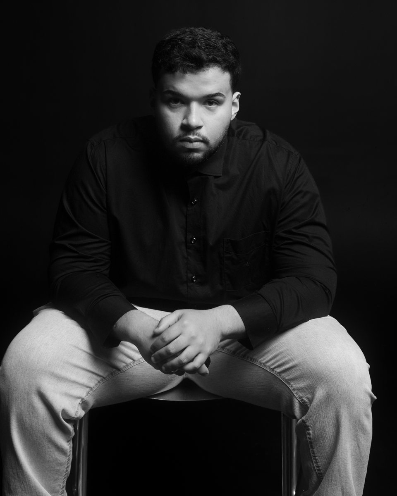

Graduação em Nutrição
Centro Universitário São Camilo
✓ Concluída em dezembro de 2025Da sala de aula ao atendimento.
Graduação no Centro Universitário São Camilo, pós-graduação na USP, um ano de iniciação científica e estágios em nutrição clínica, esportiva, alimentação coletiva e saúde coletiva.

Centro Universitário São Camilo
✓ Concluída em dezembro de 2025Universidade de São Paulo (USP)
● Em andamentoFiltre por área e clique em cada experiência para ver as atividades realizadas.
Centro Universitário São Camilo · Laboratório de Pesquisa do Exercício e Qualidade de Vida
Hospital São Camilo
Clínica-escola PROMOVE
Hotel Morumbi
Clínica-escola PROMOVE
45 horas de cursos complementares voltados à obesidade e ao emagrecimento baseados em evidências.
Prof. Dr. Marcus Quaresma, M.Sc., Ph.D.
Prof. Dr. Marcus Quaresma, M.Sc., Ph.D. e Dr. Me. Esp. Murilo Dattilo